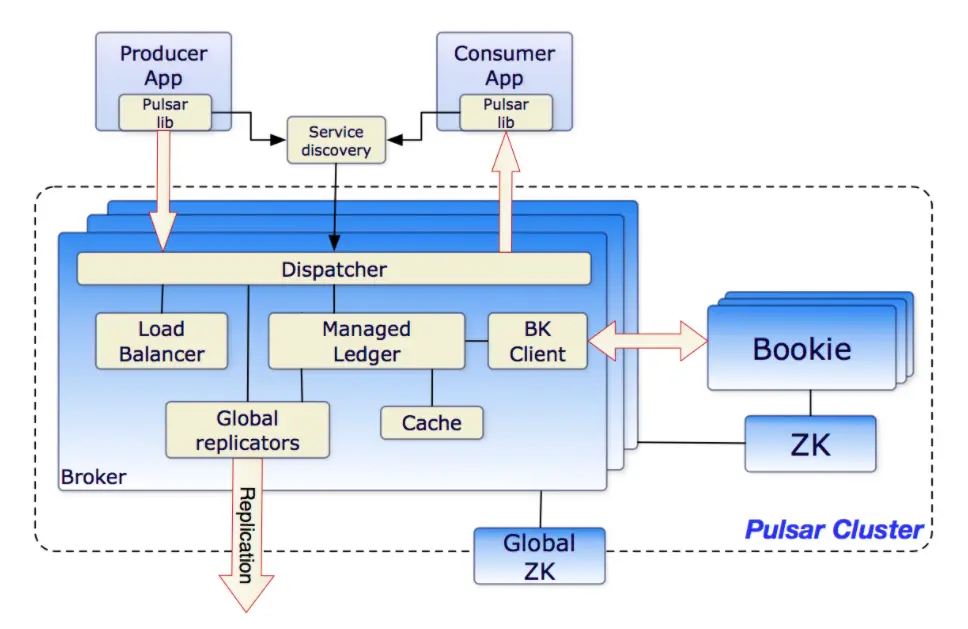

简介
Apache Pulsar 是 Apache 软件基金会顶级项目，是下一代云原生分布式消息流平台，集消息、存储、轻量化函数式计算为一体。该系统源于 Yahoo，
最初在 Yahoo 内部开发和部署，支持 Yahoo 应用服务平台 140 万个主题，日处理超过 1000 亿条消息。Pulsar 于 2016 年由 Yahoo 开源并捐赠给
Apache 软件基金会进行孵化，2018 年成为 Apache 软件基金会顶级项目。
Pulsar 作为下一代云原生分布式消息流平台，支持多租户、持久化存储、多机房跨区域数据复制，具有强一致性、高吞吐以及低延时的高可扩展流数据存储特性，
内置诸多其他系统商业版本才有的特性，是云原生时代解决实时消息流数据传输、存储和计算的最佳解决方案。

Apache Pulsar 提供了统一的消费模型，支持 Stream（如 Kafka）和 Queue（如 RabbitMQ）两种消费模型， 支持 exclusive、failover 和
shared 三种消费模式。同时，Pulsar 提供和 Kafka 兼容的 API，以及 Kafka-On-Pulsar（KoP） 组件来兼容 Kafka 的应用程序，KoP 在
Pulsar Broker 中解析 Kafka 协议，用户不用改动客户端的任何 Kafka 代码就能直接使用 Pulsar。
目前，Apache Pulsar 已经应用部署在国内外众多大型互联网公司和传统行业公司，案例分布在人工智能、金融、电信运营商、直播与短视频、物联网、
零售与电子商务、在线教育等多个行业，如美国有线电视网络巨头 Comcast、Yahoo！、腾讯、中国电信、中国移动、BIGO、VIPKID 等。
目前 Apache Pulsar 项目原生核心贡献者已组成创业公司 StreamNative，进一步为 Apache Pulsar 提供更好的企业级服务支持与生态建设。
特征
- Pulsar实例中对多个集群的本地支持，支持跨集群的消息无缝地理复制。
- 非常低的发布和端到端延迟。
- 无缝的可伸缩性，超过一百万个主题。
- 一个简单的客户端API，为Java, Go, Python和c++绑定。
- 主题的多种订阅类型(独占、共享和故障转移)。
- 使用Apache BookKeeper提供的持久消息存储来保证消息传递。无服务器轻量级计算框架Pulsar Functions提供了流原生数据处理功能。
- 无服务器连接器框架Pulsar IO构建在Pulsar Functions之上，可以更容易地将数据移进和移出Apache Pulsar。
- 当数据老化时，Tiered Storage offloads将数据从热/热存储卸载到冷/长期存储（如S3和GCS）